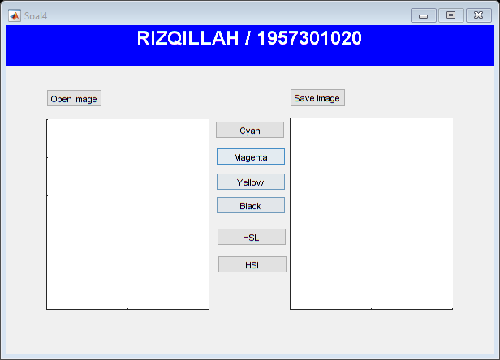

function varargout = Soal4(varargin) % SOAL4 MATLAB code for Soal4.fig % SOAL4, by itself, creates a new SOAL4 or raises the existing % singleton*. % % H = SOAL4 returns the handle to a new SOAL4 or the handle to % the existing singleton*. % % SOAL4('CALLBACK',hObject,eventData,handles,...) calls the local % function named CALLBACK in SOAL4.M with the given input arguments. % % SOAL4('Property','Value',...) creates a new SOAL4 or raises the % existing singleton*. Starting from the left, property value pairs are % applied to the GUI before Soal4_OpeningFcn gets called. An % unrecognized property name or invalid value makes property application % stop. All inputs are passed to Soal4_OpeningFcn via varargin. % % *See GUI Options on GUIDE's Tools menu. Choose "GUI allows only one % instance to run (singleton)". % % See also: GUIDE, GUIDATA, GUIHANDLES % Edit the above text to modify the response to help Soal4 % Last Modified by GUIDE v2.5 01-Oct-2021 09:17:10 % Begin initialization code - DO NOT EDIT gui_Singleton = 1; gui_State = struct('gui_Name', mfilename, ... 'gui_Singleton', gui_Singleton, ... 'gui_OpeningFcn', @Soal4_OpeningFcn, ... 'gui_OutputFcn', @Soal4_OutputFcn, ... 'gui_LayoutFcn', [] , ... 'gui_Callback', []); if nargin && ischar(varargin{1}) gui_State.gui_Callback = str2func(varargin{1}); end if nargout [varargout{1:nargout}] = gui_mainfcn(gui_State, varargin{:}); else gui_mainfcn(gui_State, varargin{:}); end % End initialization code - DO NOT EDIT % --- Executes just before Soal4 is made visible. function Soal4_OpeningFcn(hObject, eventdata, handles, varargin) % This function has no output args, see OutputFcn. % hObject handle to figure % eventdata reserved - to be defined in a future version of MATLAB % handles structure with handles and user data (see GUIDATA) % varargin command line arguments to Soal4 (see VARARGIN) % Choose default command line output for Soal4 handles.output = hObject; % Update handles structure guidata(hObject, handles); % UIWAIT makes Soal4 wait for user response (see UIRESUME) % uiwait(handles.figure1); % --- Outputs from this function are returned to the command line. function varargout = Soal4_OutputFcn(hObject, eventdata, handles) % varargout cell array for returning output args (see VARARGOUT); % hObject handle to figure % eventdata reserved - to be defined in a future version of MATLAB % handles structure with handles and user data (see GUIDATA) % Get default command line output from handles structure varargout{1} = handles.output; % --- Executes on button press in pushbutton1. function pushbutton1_Callback(hObject, eventdata, handles) % hObject handle to pushbutton1 (see GCBO) % eventdata reserved - to be defined in a future version of MATLAB % handles structure with handles and user data (see GUIDATA) % OPEN IMAGE [FileName,PathName]= uigetfile(... {'*.bmp;*.jpg;*.jpeg;*.png;*.tiff;*.gif', 'File of Type(*.bmp,*.jpg,*.jpeg,*.png,*.tiff,*.gif)'; '*.bmp', 'File Bitmap(*.bmp)';... '*.jpg', 'File Jpg(*.jpg)';... '*.jpeg', 'File Jpeg(*.jpeg)';... '*.png', 'File PNG(*.png)';... '*.tiff', 'File TIF(*.tif)';... '*.gif', 'File GIF(*.gif)';... '*.*', 'All type(*.*)'},... 'Open Image'); if ~isequal (FileName, 0) handles.data1 = imread(fullfile(PathName,FileName)); guidata (hObject, handles); axes(handles.axes1); imshow(handles.data1); title('RGB'); else return end % --- Executes on button press in pushbutton2. function pushbutton2_Callback(hObject, eventdata, handles) % hObject handle to pushbutton2 (see GCBO) % eventdata reserved - to be defined in a future version of MATLAB % handles structure with handles and user data (see GUIDATA) % CYAN image1 = handles.data1; allBlack = zeros(size(image1,1),size(image1,2)); cyan = image1(:,:,1); icyan = cat(3,allBlack,cyan,cyan); axes(handles.axes2); imshow(icyan); handles.data2 = cyan; title('Cyan'); guidata(hObject,handles); % --- Executes on button press in pushbutton3. function pushbutton3_Callback(hObject, eventdata, handles) % hObject handle to pushbutton3 (see GCBO) % eventdata reserved - to be defined in a future version of MATLAB % handles structure with handles and user data (see GUIDATA) % MAGENTA image1 = handles.data1; allBlack = zeros(size(image1,1),size(image1,2)); magenta = image1(:,:,1); imagenta = cat(3,magenta,allBlack,magenta); axes(handles.axes2); imshow(imagenta); handles.data2 = imagenta; title('Magenta'); guidata(hObject,handles); % --- Executes on button press in pushbutton4. function pushbutton4_Callback(hObject, eventdata, handles) % hObject handle to pushbutton4 (see GCBO) % eventdata reserved - to be defined in a future version of MATLAB % handles structure with handles and user data (see GUIDATA) % Yellow image1 = handles.data1; allBlack = zeros(size(image1,1),size(image1,2)); yellow = image1(:,:,1); iyellow = cat(3,yellow,yellow,allBlack); axes(handles.axes2); imshow(iyellow); handles.data2 = iyellow; title('Yellow'); guidata(hObject,handles); % --- Executes on button press in pushbutton5. function pushbutton5_Callback(hObject, eventdata, handles) % hObject handle to pushbutton5 (see GCBO) % eventdata reserved - to be defined in a future version of MATLAB % handles structure with handles and user data (see GUIDATA) % Black image1 = handles.data1; allBlack = zeros(size(image1,1),size(image1,2)); iblack = cat(3,allBlack,allBlack,allBlack); axes(handles.axes2); imshow(iblack); handles.data2 = iblack; title('Black') guidata(hObject,handles); % --- Executes on button press in pushbutton6. function pushbutton6_Callback(hObject, eventdata, handles) % hObject handle to pushbutton6 (see GCBO) % eventdata reserved - to be defined in a future version of MATLAB % handles structure with handles and user data (see GUIDATA) % HSL image1 = handles.data1; hsl = rgb2hsv(image1); axes(handles.axes2); imshow(hsl); handles.data2 = hsl; title('HSL') guidata(hObject,handles); % --- Executes on button press in pushbutton7. function pushbutton7_Callback(hObject, eventdata, handles) % hObject handle to pushbutton7 (see GCBO) % eventdata reserved - to be defined in a future version of MATLAB % handles structure with handles and user data (see GUIDATA) % HSI image1 = handles.data1; hsi = rgb2hsi(image1); axes(handles.axes2); imshow(hsi); handles.data2 = hsi; title('HSI') guidata(hObject,handles); % --- Executes on button press in pushbutton8. function pushbutton8_Callback(hObject, eventdata, handles) % hObject handle to pushbutton8 (see GCBO) % eventdata reserved - to be defined in a future version of MATLAB % handles structure with handles and user data (see GUIDATA) % SAVE IMAGE save = handles.data2; [filename, pathname] = uiputfile(... {'*.jpg','File Jpeg(*.jpg)';... '*.bmp', 'File Bitmap(*.bmp)';... '*.png', 'File PNG(*.png)';... '*.tif','File Tif(*.tif)'; '*.*','All Files(*.*)'},... 'Save Image'); if ~isequal(filename,0) imwrite(save, fullfile(pathname,filename)); else return end